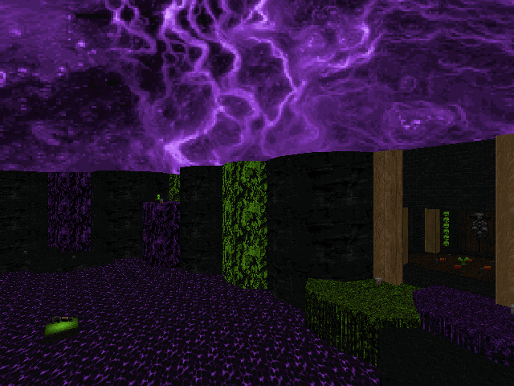

DOWNLOAD LINKS


| Year | 2025 |
| IWAD | Doom II |
| Source port | MBF21-compatible |
| Game mode(s) | Single-player, coop |
| Map(s) contributed | MAP01 |
PUSS XLIV: Pineapple Under the Spectrum is the 44th entry in the ongoing Pineapple Under the Sea speedmapping
series. This time around, the theme was vibrant colors, and participating mappers had 6 hours to make their maps. The final
megawad contains a total of 19 maps from 15 different authors.
The set opens with a map from Yours Truly, "5 years of speedmapping and I'm still a manslut for detail". (Don't ask how I came
up with the title.) It's a relatively small and straightforward map with some hectic gameplay. You'll have to scramble for
ammo early on - which is somewhat of a gameplay trademark of mine at this point - but you'll go out in a plasma-laden blaze
of glory in the second half. The map was made in just over 4 hours.